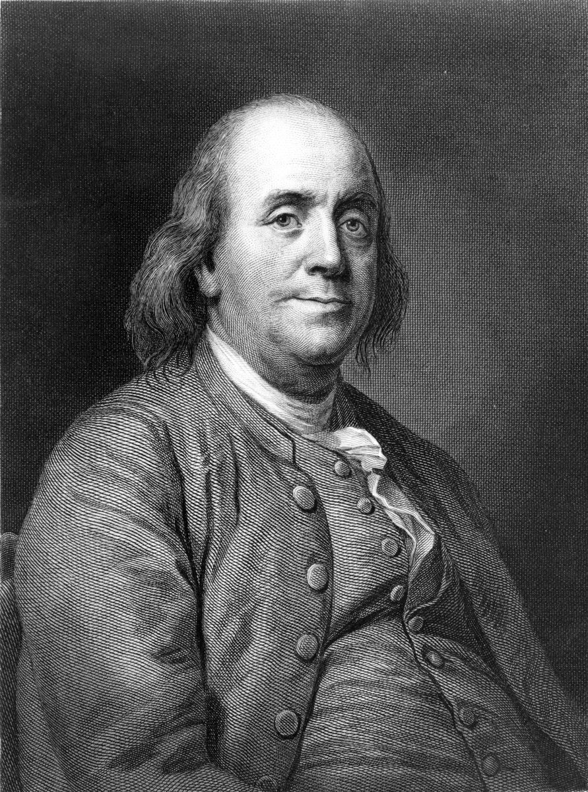

10 Lợi Ích Của Dậy Sớm



*Benjamin Franklin (1706-1790) là một trong những người thành lập nước nổi tiếng nhất của Hoa Kỳ. Ông là một chính trị giá, nhà khoa học, tác giả, thợ in, triết gia, nhà phát minh, nhà hoạt động xã hội, nhà ngoại giao hàng đầu. (Nxb)
Dậy sớm có lợi cho sức khỏe. Tuy nhiên, có hàng tấn các lợi ích tuyệt vời khác nữa...
Đầu tiên, hãy nghe điều này nếu bạn là một con cú đêm. Thức khuya có ích cho bạn? Vậy thì tuyệt. Không có lý do nào để cần phải thay đổi, đặc biệt nếu bạn hài lòng với điều đó. Nhưng chuyển từ một con cú đêm sang một người dậy sớm (và điều đó có thể!) mang lợi ích đến cho bạn theo rất nhiều cách đến nỗi bạn sẽ không bao giờ muốn trở lại như trước nữa. Đây chỉ là một vài thí dụ:
1. Chào đón ngày mới. Đức Đạt Lai Lạt Ma đã nói: “Mỗi ngày, khi bạn thức giấc hãy nghĩ rằng hôm nay tôi là một người may mắn được thức giấc, tôi đang sống, tôi có một cuộc đời ở phía trước, tôi sẽ không lãng phí nó. Tôi sẽ sử dụng tất cả năng lượng của mình để phát triển bản thân, để mở rộng trái tim với những người khác, để đạt được giác ngộ vì lợi ích của tất cả chúng sinh, tôi sẽ có những suy nghĩ tích cực hướng về người khác, tôi sẽ không giận dữ hoặc nghĩ xấu về người khác, tôi sẽ mang lợi ích đến cho người khác nhiều nhất có thể”.
2. Khởi đầu tuyệt vời. Bạn đã từng bắt đầu ngày mới của mình bằng cách nhảy ra khỏi giường, muộn như thường lệ, vội vàng chuẩn bị cho chính mình và bọn trẻ, vội vàng thả chúng ở trường sau đó lật đật đến chỗ làm. Bạn sẽ bước vào nơi làm việc, trông nhàu nhĩ, hầu như chưa tỉnh táo, gắt gỏng, đi sau những người khác. Đó không phải là một khởi đầu tuyệt vời để bắt đầu một ngày của bạn. Dậy sớm cho bạn có một buổi sáng khác hẳn. Bạn sẽ làm được rất nhiều việc trước 8 giờ sáng, các con bạn cũng hình thành thói quen dậy sớm. Lúc mọi người bắt đầu làm việc, bạn đã đi trước một bước. Theo kinh nghiệm của nhiều người, không có cách nào để bắt đầu một ngày của bạn tốt hơn thức dậy sớm.
3. Sự yên ổn. Không có tiếng bọn trẻ la hét, không có tiếng ồn do trẻ con khóc, không có tiếng đá bóng, không có tiếng ồn do xe cộ, không có tiếng ồn tivi. Thời gian lúc sáng sớm rất bình yên, rất tĩnh lặng. Rồi bạn sẽ thấy đó là thời gian yêu thích trong ngày của bạn. Bạn sẽ thật sự tận hưởng khoảng thời gian yên bình đó, khoảng thời gian dành cho bản thân, khi bạn có thể suy nghĩ, có thể đọc, có thể hít thở.
4. Ngắm mặt trời mọc. Những người ngủ dậy muộn đã bỏ lỡ một trong những kỳ quan vĩ đại nhất của tự nhiên, lặp đi lặp lại trước mắt mỗi ngày – cảnh mặt trời lên: trời từ từ trở nên sáng hơn, khi màu xanh thẫm của buổi đêm chuyển sang màu xanh sáng, khi những màu sắc rực rỡ bắt đầu thấm vào bầu trời, khi vạn vật được phủ lên những màu không thể tin được. Trong cảnh trí đó, bạn có thể ngẩng lên bầu trời nói với thế giới: “Thật là một ngày tươi hồng rực rỡ”. Nghe hơi “sến” phải không, nhưng thú vị, bàn biết mà!
5. Bữa sáng. Dậy sớm và bạn có thời gian thảnh thơi dành cho buổi sáng. Bạn biết đó là một trong những bữa ăn quan trọng nhất trong ngày. Không ăn sáng, cơ thể bạn vận hành hết sức cho đến khi bạn quá đối vào bữa trưa đến nỗi bạn ăn bất cứ thứ gì không tốt cho sức khỏe mà bạn tìm thấy. Càng ăn nhiều chất béo và đường, bạn càng cảm thấy ổn hơn. Nhưng ăn bữa sáng, bạn có thể no cho đến tận trưa. Cộng thêm, ăn sáng trong khi đọc sách và uống một tách cà phê, thưởng thức ban mai yên tĩnh hoàn toàn thú vị hơn cố gắng nhồi nhét cái gì đó xuống dạ dày trên đường đi làm, hoặc ở bàn làm việc.
6. Tập thể dục. Có những khoảng thời gian khác để tập thể dục ngoài buổi sáng sớm, dĩ nhiên, và tập thể dục ngay sau giờ làm việc cũng rất thú vị, nhưng rất thường bị hủy bỏ vì dễ có những việc khác xen vào. Còn tập thể dục buổi sáng hầu như không bao giờ bị hủy bỏ.

7. Năng suất cao. Sáng sớm là thời gian đạt năng suất cao nhất trong ngày. Nếu bạn viết lách vào buổi sáng, thì thời gian đó không có bất cứ thứ gì làm bạn phân tâm, trước khi bạn kiểm tra email hoặc tình trạng blog. Bạn sẽ hoàn thành được rất nhiều việc vào buổi sáng. Sau đó, khi tối đến, bạn không còn việc nào cần phải làm và có thể dành thời gian ấy cho gia đình mình.
8. Thời gian để thực hiện mục tiêu. Bạn có các mục tiêu không? Chà, hẳn phải có. Và bạn không có thời gian để xem xét, lên kế hoạch cho những việc ấy cũng như thực hiện các bước đầu tiên? Nếu bạn phải có một mục tiêu mà bạn muốn hoàn thành tuần này thì mỗi sáng, bạn phải quyết định bạn có thể làm gì ngày hôm nay để giúp bạn tiến đến gần mục tiêu đó. Sau đấy, nếu có thể, làm việc đó đầu tiên vào buổi sáng.
9. Đi lại. Không ai thích giao thông vào giờ cao điểm, ngoại trừ công ty xăng dầu. Chuyển sang đi làm sớm, giao thông sẽ đỡ hơn nhiều. Bạn sẽ đến chỗ làm nhanh hơn, nhờ thế tiết kiệm rất nhiều thời gian. Hoặc tốt hơn, chuyển sang đi làm bằng xe đạp.
10. Các cuộc hẹn. Nếu bạn dậy sớm, bạn sẽ dễ dàng đến đúng giờ các cuộc hẹn sớm trong ngày. Đến trễ trong những cuộc hẹn để lại dấu ấn không hay đối với người hẹn gặp. Xuất hiện sớm sẽ gây ấn tượng cho họ. Cộng thêm nữa, bạn có thời gian để chuẩn bị.
Làm sao để trở thành một người dậy sớm?
* Đừng thay đối quyết liệt. Bắt đầu từ từ bằng cách chỉ dậy sớm hơn 15-30 phút so với thường lệ. Làm quen với việc này trong một vài ngày. Sau đó thêm 15 phút nữa. Làm dần dần cho đến khi bạn đạt được mục tiêu thời gian của mình.
* Đi ngủ sớm. Bạn đã quen với việc thức khuya, có lẽ để xem tivi hay lướt web. Nhưng nếu tiếp tục thói quen này trong khi cố gắng để dậy sớm, không sớm thì muộn bạn sẽ bỏ cuộc. Nếu bạn từ bỏ việc dậy sớm, bạn sẽ đi ngủ muộn và phải bắt đầu lại. Bạn hãy đi ngủ sớm, ngay cả khi bạn không nghĩ bạn sẽ ngủ được, và đọc sách khi ở trên giường. Nếu bạn thật sự mệt mỏi, bạn sẽ chìm vào giấc ngủ sớm hơn bạn nghĩ.
* Để đồng hồ báo thức xa giường. Nếu đặt nó ngay bên giường, bạn sẽ tắt nó đi hoặc cài lại giờ. Đừng bao giờ cài lại giờ. Để đồng hồ cách xa giường của bạn, bạn phải ra khỏi giường để tắt. Trong lúc ấy, bạn đã tỉnh giấc. Giờ chỉ việc thức dậy thôi.
* Ra khỏi giường ngay khi tắt đồng hồ báo thức. Đừng cho phép mình có lý do hợp lý quay trở lại giường. Hãy buộc mình ra khỏi phòng. Thói quen hay là vào nhà tắm và đi vệ sinh. Lúc bạn làm việc đó xong, dội toilet và rửa tay, nhìn cái mặt xấu xí của mình trong gương, bạn đã đủ tỉnh táo để đối diện với một ngày mới.
* Đừng hợp lý hóa. Nếu bạn cho phép trí não của bạn bảo: “Thôi, ngừng dậy sớm đi!”, bạn sẽ không bao giờ dậy sớm được. Đừng đưa ra bất cứ lựa chọn trở lại giường nào cả.
* Có một lý do tốt. Đặt ra việc gì đó phải làm vào sáng sớm rất quan trọng. Lý do này sẽ thúc đẩy bạn thức dậy. Có thể chuyển việc lướt web đọc tin tức lên sáng sớm chẳng hạn. Hoặc đọc các bình luận của trên blog cá nhân của bạn.
* Thưởng cho việc dậy sớm. Đúng vậy, dường như đây là lần đầu tiên bạn buộc mình phải làm việc gì khó khăn như vậy, sớm thôi bạn sẽ trông chờ để dậy sớm. Một phần thưởng xứng đáng là thưởng thức tách cà phê hoặc tách trà nóng và đọc một cuốn sách. Phần thưởng khác có thể là bữa ăn sáng ngon lành hoặc ngắm mặt trời lên, hoặc thiền. Tìm thứ gì đó mang lại niềm vui cho bạn, cho phép bạn làm việc đó như là một phần của thói quen buổi sáng.
* Tận dụng tất cả thời gian có thêm. Đừng thức dậy sớm hơn 1-2 giờ chỉ để đọc blog, trừ khi đó là một mục tiêu chính của bạn. Đừng thức dậy sớm và lãng phí khoảng thời gian có thêm. Tận dụng thời gian này tạo ra một bước nhảy vọt để bắt đầu một ngày của bạn. Hãy sử dụng thời gian nói trên chuẩn bị bữa trưa cho con cái, lên kế hoạch sử dụng thời gian còn lại của ngày (lập ra những việc quan trọng cần làm), tập thể dục / ngồi thiền và đọc.